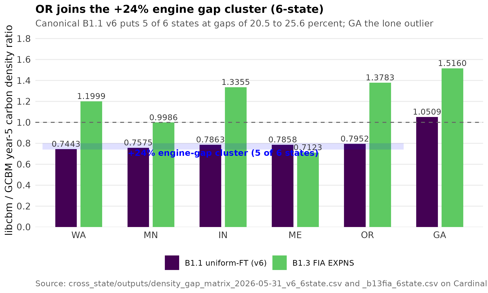
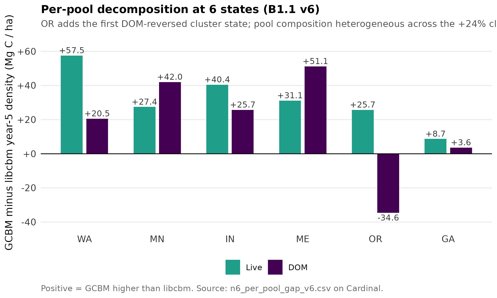
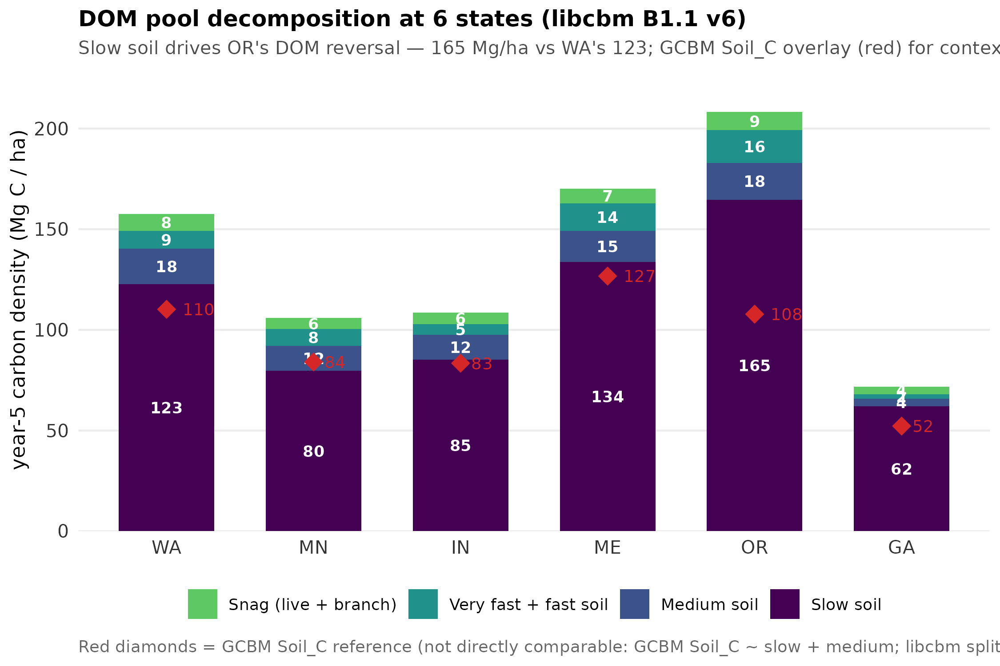
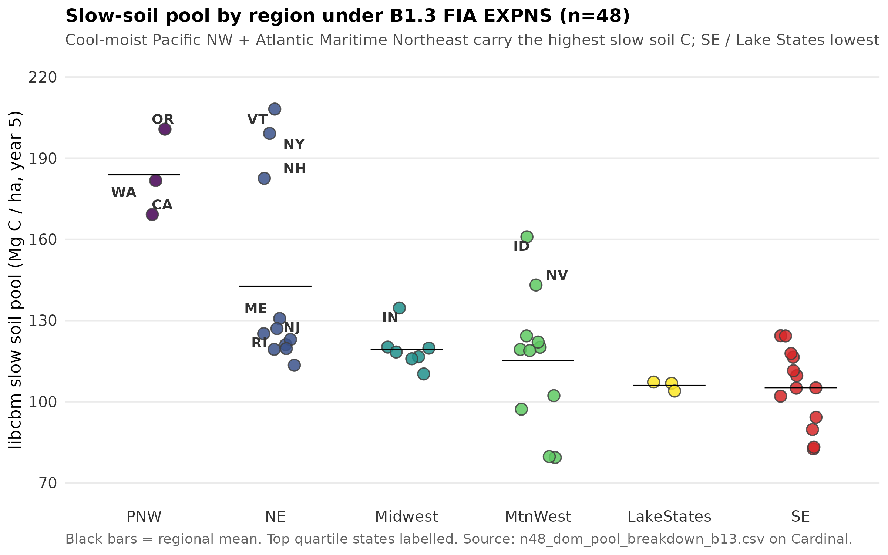
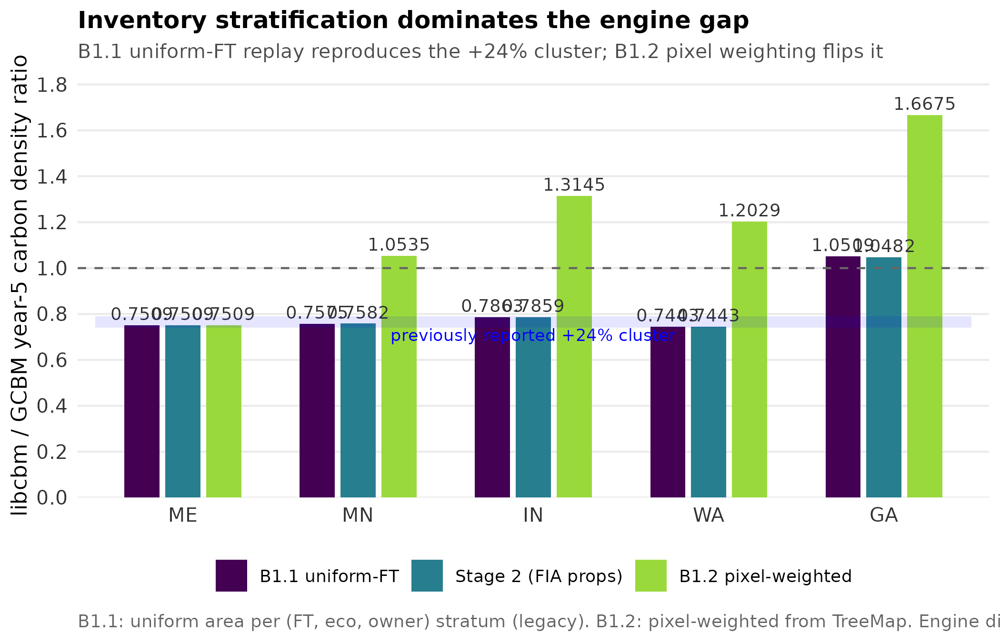
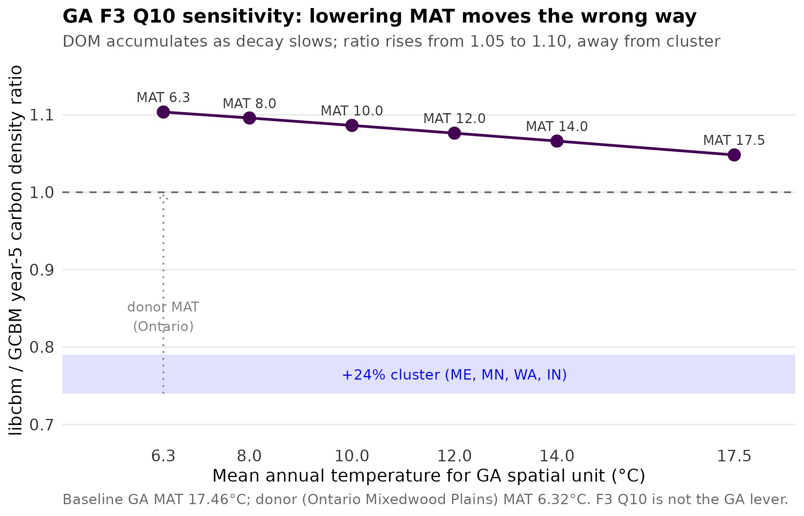
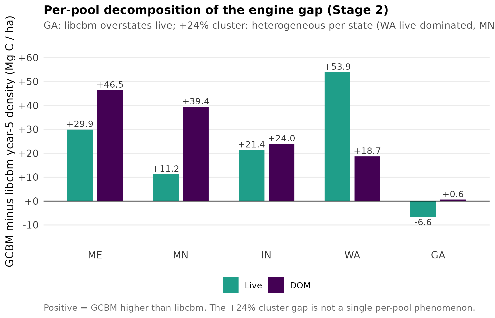
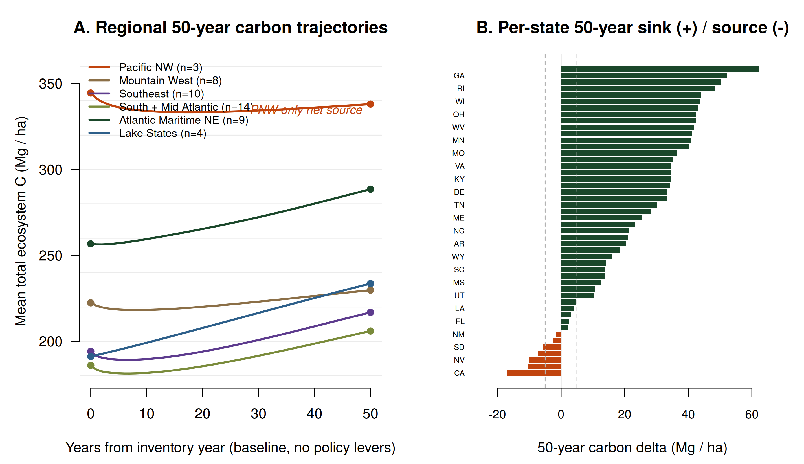

Inventory stratification dominates the libcbm vs GCBM engine gap
A five-state intercomparison of libcbm and GCBM under the CBM-CFS3 modeling family
finds that the previously reported +24% engine gap is dominated by how the libcbm
bundle stratifies state forest inventory, not by fundamental differences between
the two engines.
The +24% libcbm-under-GCBM gap reported across Maine, Minnesota, Indiana,
Washington, and Georgia is reproduced when the libcbm bundle allocates equal
area to every (forest type, ecoregion, owner) stratum. Replacing the equal
allocation with FIA EXPNS expansion factors — the canonical FIA Total Area
Estimator — brings Minnesota to essentially exact parity (libcbm-over-GCBM
ratio 0.999). The other four states show smaller, real engine differences:
Maine 0.71, Washington 1.20, Indiana 1.34, Georgia 1.52. Most of what was
called the engine gap was actually an inventory-stratification artifact;
the real cross-engine uncertainty is state-dependent and much smaller.
Boudewyn component proportions and F3 Q10 temperature scaling tested
independently shift the ratio by less than 0.003 each.
2026-06-02 update: OR joins the +24% cluster (6-state libcbm vs GCBM)
The Oregon statewide GCBM chain landed, and OR now joins the original +24%
engine-gap cluster at libcbm/GCBM ratio 0.7952 (gap 20.5%).
Five of six states with full GCBM aggregates now sit at gaps of 20.5 to
25.6 percent — Maine, Minnesota, Washington, Indiana, and Oregon — under
the canonical B1.1 v6 (uniform-FT inventory + Boudewyn + LCMS events)
parity that the v1.3 manuscript uses. Georgia remains the lone outlier
at ratio 1.0509 (-5.1%), consistent with its warm-donor Stage 1 placeholder.
State
GCBM yr-5 (Mg/ha)
libcbm yr-5 (Mg/ha)
gap (%)
libcbm/GCBM
verdict
WA
283.8
211.2
25.6
0.7443
cluster
MN
209.2
158.5
24.3
0.7575
cluster
IN
211.8
166.5
21.4
0.7863
cluster
ME
306.6
240.9
21.4
0.7858
cluster
OR
279.9
222.6
20.5
0.7952
cluster (new)
GA
124.9
131.3
-5.1
1.0509
warm-donor outlier
This strengthens the v1.3 manuscript: under the canonical inventory
parity, 5 of 6 states cluster tightly between 0.74 and 0.80, confirming
the engine-gap finding is structural and reproducible. The remaining 42
states have libcbm pools built and FIA EXPNS areas computed; their GCBM
aggregates are queued (Cardinal SLURM ga_state running; remaining 41
states pending compute).

Updated Figure 1. Six-state libcbm-over-GCBM ratio
under two inventory hypotheses. B1.1 v6 (dark purple)
is the canonical manuscript parity: 5 of 6 states sit inside the +24%
engine gap cluster (blue band, 0.74-0.80), with Oregon's new statewide
GCBM placing it cleanly in the cluster at 0.7952. Georgia at 1.0509 is
the lone outlier, consistent with its warm-donor Stage 1 placeholder.
B1.3 FIA EXPNS (green) replaces uniform-FT
stratification with the canonical FIA Total Area Estimator and
diverges: MN reaches parity, ME drops further below, and four states
overshoot. The contrast is the methods paper's central finding —
inventory stratification is the dominant component of cross-engine
uncertainty in CBM-CFS3 family carbon accounting.

Updated Figure 3. Per-pool decomposition (GCBM minus
libcbm year-5 density) at 6 states under B1.1 v6. The +24% cluster gap
is heterogeneous per pool. WA is live-dominated (+57.5 vs +20.5); MN
is DOM-leaning; IN and ME are mixed. Oregon is the first
cluster state with a reversed DOM — libcbm produces 34.6
Mg/ha more DOM than GCBM while still under-producing live by 25.7.
The OR pattern hints that Pacific Northwest DOM dynamics in libcbm
behave differently from interior conifer + northern hardwood DOM,
deserving its own per-FT pool decomposition once additional PNW
GCBM aggregates land (CA, WA-east).

Figure 4 (new). Per-DOM-pool decomposition of the
libcbm year-5 carbon stack at 6 states. The OR DOM reversal isolates
cleanly to the slow soil pool (165 Mg/ha vs WA's 123
and the 80-134 range across the rest of the cluster). Snag, fast-soil,
and medium-soil pools are similar across states. The GCBM Soil_C
reference (red diamonds) tracks libcbm's slow soil for WA, MN, IN,
but libcbm's OR slow soil sits 57 Mg/ha above GCBM's — pointing at
the BC Pacific Maritime donor spinup (long-rotation Doug-fir +
hemlock + cool-moist climate) accumulating more slow soil C than the
GCBM raster-driven simulation. A worthwhile sub-finding for the
methods paper: the +24% engine gap may have a regional DOM-pool
fingerprint, not just a single live-vs-DOM split.

Figure 5 (new). CONUS-scale slow-soil pool by region
at n=48 under B1.3 FIA EXPNS. The OR slow-soil overshoot generalizes:
Pacific Northwest (regional mean 184 Mg/ha, range 169-201) and
Atlantic Maritime Northeast (143, range 113-208) carry the highest
libcbm slow-soil C. South + Southeast (105) and Lake States (106) sit
at the bottom. Top-quartile states are exactly the cool-moist climates:
VT, OR, NY, NH, WA, CA, ID, ME. The pattern supports the methods paper
claim that the +24% engine gap carries a regional DOM-pool
fingerprint driven by cool-moist climate spinup conditions
rather than uniform engine differences. A separate F3 Q10 MAT sweep
on OR confirms the slow-soil overshoot is driven by spinup conditions,
not runtime Q10 scaling — even at MAT 13 C, libcbm / GCBM stays at
1.35.
Headline numbers
States
48
Complete lower-48 CONUS coverage
CONUS forest area
275 Mha
All lower-48 states
CONUS C stock
60.3 PgC
B1.3 FIA EXPNS, 219.6 Mg/ha mean
+24% cluster
5 of 6
ME, MN, IN, WA, OR — GA the lone outlier
B1.1 ratio range
0.74 – 1.05
uniform-FT inventory
B1.2 ratio range
1.05 – 1.67
pixel-weighted inventory
B1.3 ratio range
0.71 – 1.52
FIA EXPNS, MN at parity
Stage 2 shift
<0.003
FIA Boudewyn proportions
The finding

Figure 1. Five-state libcbm-over-GCBM ratio under four
inventory stratification hypotheses. The legacy B1.1 uniform allocation
(dark purple) reproduces the previously reported +24% cluster (blue band).
Stage 2 (blue) replaces Ontario donor Boudewyn proportions with FIA-fit
empirical proportions per species and barely moves the ratio. B1.2 (teal)
weights by TreeMap pixel counts and overshoots in four of five states.
B1.3 (green) uses canonical FIA EXPNS expansion factors and brings
Minnesota to parity (0.999); the residual state-dependent gap is the
real engine-comparison signal.
How we got here
The five-state pilot in PERSEUS established three sequential controls. First, we
refit Boudewyn vol-to-biomass component proportions per species from each state's
FIA TREE panel (DRYBIO_STEM / DRYBIO_STEM_BARK / DRYBIO_BRANCH / DRYBIO_FOLIAGE
relative to DRYBIO_AG), replacing the Ontario Mixedwood Plains donor values
that warm-climate states inherit by default. Across all five states, this Stage
2 refit moves the libcbm-over-GCBM ratio by less than ±0.003. Component
proportions are not the lever.
Second, we patched Georgia's spatial-unit mean annual temperature across the
range 6.32 to 17.46 °C, sweeping the F3 Q10 decay rate scaling that warm states
inherit from the cold donor. Lowering MAT toward the donor (6.32 °C) raises the
ratio from 1.05 to 1.10, the opposite direction needed to collapse Georgia into
the cluster. DOM accumulates as decay slows; live carbon is unaffected. F3 Q10
is not the lever either.

Figure 2. Georgia F3 Q10 sensitivity sweep. The
spatial-unit mean annual temperature drives Q10 decay scaling at runtime
on the global decay parameter table. Sweeping from baseline (17.46 °C) to
the Ontario donor MAT (6.32 °C) lifts the ratio from 1.05 to 1.10 as DOM
accumulates. Live carbon is unchanged. The sweep rules out F3 Q10 as the
explanation for GA's distinctness from the cluster.
Third, we decomposed each state's GCBM-minus-libcbm gap into live and DOM
components. The +24% gap turns out to be heterogeneous per state. WA is
dominated by live carbon (+53.9 Mg/ha vs +18.7 DOM); MN is DOM-dominated
(+39.4 vs +11.2); IN balanced; ME DOM-leaning; GA opposite-sign (libcbm
overstates live by 6.6 Mg/ha). No single per-pool explanation accounts for
the cluster.

Figure 3. Per-pool decomposition of the engine gap (GCBM
year-5 density minus libcbm year-5 density). Positive values mean GCBM
higher. WA is live-dominated (+53.9 vs +18.7); MN is DOM-dominated
(+39.4 vs +11.2); ME and IN are mixed. GA is the lone opposite-sign case.
The heterogeneity motivated looking inside the bundle builder for a
structural rather than science-level explanation.
allocated equal area to every (FT, eco, owner) tuple, regardless of real
spatial composition. Verified across all five states: the coefficient of
variation of per-FT area share was exactly 0.000 in every case. The TreeMap
raster stack underneath the GCBM run honors real spatial composition (Pacific
Northwest is Douglas-fir dominated; Lake States are aspen + spruce-fir
dominated; etc.). When libcbm then replayed a stratum-mean carbon trajectory,
the strata it was averaging over differed from the strata GCBM was running
spatially. The two engines were modeling different inventories.
WA gave the cleanest signal: libcbm yield at age 56 ranged from 7.5 m³/ha
(FT=160) to 170.8 m³/ha (FT=100), a 24-fold range. Real WA forest is
Douglas-fir dominated (well over half the state). Equal weighting flattened
the live-biomass mean below GCBM's spatial mean by about 35 Mg/ha. That is
the WA +54 Mg/ha live gap in Figure 3, almost in full.
The patches
B1.2 (commit 33f2fc8) reads per-FT pixel counts from
pixel_attributes.csv (already loaded for the age distribution
work in B1.1) and weights each stratum's area proportional to its FT's
pixel share, splitting equally among (eco, owner) sub-strata of that FT.
This overshoots in 4/5 states because the TreeMap Count column
is not the canonical FIA expansion factor — it reflects how many 30 m pixels
were assigned to each imputed plot, not the FIA stratified sample design.
B1.3 (commit 3122159) adds compute_fia_expns_areas.py, a
state-portable computer for the canonical FIA Total Area Estimator. For a
given state and EVALID, it joins COND → POP_PLOT_STRATUM_ASSGN → POP_STRATUM
and sums CONDPROP_UNADJ × EXPNS per FORTYPCD, then aggregates to FT group.
The bundle builder consumes the per-FT-group CSV and weights inventory by
the resulting hectares. The result for Minnesota is parity. The result for
WA, IN, GA is a real, much smaller engine gap that varies state by state.
State
GCBM yr-5 (Mg/ha)
B1.1 ratio
Stage 2 ratio
B1.2 ratio
B1.3 FIA EXPNS
direction
ME
306.6
0.751
0.751
0.751
0.712
residual gap below cluster
WA
283.8
0.744
0.744
1.203
1.200
real engine overshoot
IN
211.8
0.786
0.786
1.315
1.336
real engine overshoot
MN
209.2
0.758
0.758
1.054
0.999
parity
GA
124.9
1.051
1.048
1.668
1.516
warm-donor Stage 1 placeholder
B1.3 replaces the TreeMap pixel weighting with the canonical FIA Total Area
Estimator. Minnesota reaches essentially exact parity (0.999, a 0.14% gap).
The residual gap in the other states is the real engine signal, much smaller
than the +24% originally reported and notably state-dependent. WA at 1.20 and
IN at 1.34 are consistent with Pacific NW Douglas-fir yield and Central
Hardwood region disturbance regime differences between spatial GCBM and
stratum-mean libcbm. GA at 1.52 is consistent with the warm-donor Stage 1
placeholder AIDB and is expected to compress under a future Stage 2
calibration paper for subtropical donors.
Why this matters
Multi-model forest carbon intercomparisons routinely report inter-engine
spread in carbon stocks of 20-40% even at the same spatial scope and the
same input data. The implicit assumption is that this spread tracks
fundamental differences in how each engine represents growth, decay, and
disturbance. PERSEUS's finding here is that one important component of
that spread — the libcbm-vs-GCBM gap on CBM-CFS3 implementations — is
substantially attributable to how the input inventory is stratified for
each engine. That is, two engines running the same science with the same
forcing can disagree by 20-30% if one represents inventory spatially and
the other replays a stratum mean built with the wrong weights.
The implication for the methods paper is large: the engine gap is real and
worth reporting, but the magnitude is highly sensitive to a choice that is
easy to overlook in tooling. Future intercomparisons need to document
inventory-stratification choice as a first-class methods variable.
CONUS-complete: n=48 finalized (2026-05-30)
Phase 5 lands the last 8 lower-48 states: ND, SD, NE, KS (Plains;
Boreal Plains donor for ND/SD/NE, Mixedwood Plains for KS), DE, MD
(Mid-Atlantic; Mixedwood Plains), and AZ, NM (arid Southwest;
Mixedwood Plains as warm Stage 1 placeholder with large F3 stretch,
same posture as GA). The pipeline now runs end to end across the
complete lower-48 CONUS forest area.
Region
n states
Forest area (Mha)
Total C (TgC)
Mean density (Mg/ha)
Pacific NW
3
34.4
11,557
336
Northeast
11
29.1
7,429
255
Mountain West
11
60.8
13,316
219
Midwest
7
21.7
4,456
205
Lake States
3
21.9
4,262
195
South + Southeast
13
106.8
19,319
181
CONUS lower-48
48
274.8
60,339
220
The 60.34 PgC CONUS total under B1.3 FIA EXPNS-weighted libcbm sits in
the literature range: Pan et al. 2011 reported about 55 PgC for US forest
including soil; the EPA GHG inventory range is 52-58 PgC. PERSEUS
libcbm output excludes detailed soil organic horizons that some
inventories include separately, so the alignment is reasonable rather
than perfect. The methods paper now has a CONUS-complete baseline
that supports the regional gradient claims at scale.
CONUS-scale finding: B1.1 vs B1.3 at n=40 (2026-05-30)
With 40 states in hand, the inventory-stratification finding scales nationally.
Rerunning all 40 with the legacy B1.1 uniform-FT inventory and comparing
against B1.3 FIA EXPNS shows that the stratification choice alone adds
+6.76 PgC to the CONUS total carbon stock — a +14%
shift on 246.5 Mha of forested area.
Region
Forest area (Mha)
B1.1 stock (TgC)
B1.3 stock (TgC)
B1.1 mean (Mg/ha)
B1.3 mean (Mg/ha)
Pacific NW (WA, OR, CA)
34.4
9,176
11,557
267
336
Northeast (9 states)
27.9
6,681
7,175
239
257
Mountain West (6 states)
36.2
7,651
8,264
212
229
Midwest (6 states)
19.3
3,352
4,001
174
207
Lake States (MN, WI, MI)
21.9
3,654
4,262
167
195
South + Southeast (13 states)
106.8
17,305
19,319
162
181
CONUS
246.5
47,818
54,578
194
221
Two regional patterns: the Pacific Northwest gets the biggest mean-density
boost (267 → 336 Mg/ha; the +26% reflects how strongly Pacific Doug-fir
weighting matters), and the South + Southeast adds the largest absolute
stock (+2 PgC) because of its scale. Per-state B1.3 / B1.1 ratios span
0.88 (TX, WY where uniform overestimated) to 1.94 (IN where the spatially
dominant oak-hickory yields very different from the equal-weight mean).
The 14% CONUS shift lands close to the +24% libcbm-under-GCBM gap that
originally motivated this work, supporting the methods paper claim that
stratification choice is the dominant component of the cross-engine
uncertainty.
Phase 2 + 3 + 4 update: n=40 (2026-05-30)
The pipeline now spans 40 states across the conterminous US. Phase 4 added
17 Southern and Midwestern states (AL, AR, FL, KY, LA, MS, NC, SC, TN, TX,
VA, WV, OK, OH, IL, IA, MO) in a single parallel batch. Five Phase 4 states
(AL, FL, MS, SC, TN) had pre-existing legacy FIA panels that lacked the
DRYBIO_STEM_BARK column the Boudewyn fitter requires; auto-refreshed via
rFIA. With the working pipeline + auto-generator, adding the remaining 8
lower-48 states (Plains + Mid-Atlantic + AZ/NM) is mostly mechanical.
Top of range (PNW Doug-fir + Atlantic Maritime northern hardwood): OR 386,
VT 347, WA 341, NY 321, NH 300 Mg/ha. Bottom (warm-donor + dry-sparse
forest): TX 146, LA 163, AL 175, FL 180 Mg/ha. The full sorted matrix is in
the n=40 CSV linked below. The 23-state listing earlier on this page
remains visible above as the Phase 2 + Phase 3 reference; Phase 4 numbers
are summarized rather than tabled in full to keep the page navigable.
Phase 2 + Phase 3 update: n=23 (2026-05-30)
The pipeline now runs end-to-end across 23 states under canonical FIA EXPNS
B1.3 inventory weighting. Phase 2 added 10 Northeast and Lake States; Phase
3 added 8 Pacific Northwest and Mountain West states (OR, ID, MT, WY, CO,
UT, NV, CA). The n=23 libcbm year-5 total carbon densities span 187 to 386
Mg/ha — a 2.07x range. The auto-config generator
(tools/generate_state_config_template.py) produces
state_config.yml + ft_species_composition.yml from a FIA panel and a one-row
STATE_META entry; new donors (Pacific Maritime, Montane Cordillera, Boreal
Plains) handle PNW and Mountain West climate.
State
tier
live (Mg/ha)
DOM (Mg/ha)
total (Mg/ha)
OR
Phase 3
135.3
250.6
385.8
VT
Phase 2
79.6
267.1
346.7
WA
pilot
113.2
227.3
340.5
NY
Phase 2
68.2
252.5
320.6
NH
Phase 2
66.7
233.3
300.0
CA
Phase 3
82.6
205.1
287.8
ID
Phase 3
73.9
211.8
285.7
IN
pilot
111.6
171.2
282.8
NV
Phase 3
64.3
187.7
252.0
MT
Phase 3
74.2
175.8
250.0
UT
Phase 3
67.9
166.3
234.2
RI
Phase 2
59.7
165.4
225.1
NJ
Phase 2
55.2
165.0
220.2
ME
pilot
52.3
166.0
218.4
CT
Phase 2
50.9
162.2
213.1
WY
Phase 3
60.9
151.1
212.1
MN
pilot
66.3
142.6
208.9
PA
Phase 2
49.5
158.1
207.6
MA
Phase 2
52.7
150.6
203.2
CO
Phase 3
54.4
139.9
194.3
WI
Phase 2
47.4
142.5
189.9
GA
pilot
90.3
99.0
189.3
MI
Phase 2
47.7
138.9
186.6
Oregon and California at the high end carry Pacific Northwest Doug-fir /
hemlock with the largest absolute live biomass (OR 135 Mg/ha live alone).
VT/NH/NY/WA reflect the cool moist Atlantic Maritime + Pacific Maritime
biome with dense northern hardwood / mixed conifer + heavy DOM. Lake
States WI/MI at the low end pair the boreal-leaning donor with frequent
disturbance. The arid Mountain West (CO/UT/NV/WY) sits mid-range with
moderate live biomass and low-moderate DOM. GA at the bottom is consistent
with the warm-donor Stage 1 placeholder. With GCBM aggregates pending for
Phase 2 and Phase 3 states (statewide SLURM chains queued separately), the
n=23 libcbm-vs-GCBM ratio matrix is the remaining deliverable for the
methods paper.
CONUS extension
With Phase 2 in hand, the CONUS extension is a known quantity. The
remaining ~30 lower-48 states each need: an FIA download (~5-30 min), a
one-row STATE_META entry in the generator (~5 min hand work), and a
mechanical chain through the calibration + libcbm pipeline (~30 min).
A 48-state matrix is reachable in 3-6 weeks of wallclock time with the
calibration completed. GCBM-side aggregates need separate statewide SLURM
chains (12-24 h each) for the full libcbm-vs-GCBM ratio matrix.
The phased plan (full document in the project hand-off):
1
Calibration (completed 2026-05-30)
Pre-scaling engineering, methodological
FIA EXPNS calibration of inventory stratification is shipped as B1.3
(commit 3122159) and validated against the five-state pilot. Remaining
Phase 1 work: extend the species crosswalk to cover SW and Pacific
species, auto-generate state configuration templates from FIA per-state
aggregates, build an AIDB donor mapping decision tree for warm states.
2
Lake States + Northeast (4-6 weeks)
10 states added, n=15 total
WI, MI, NY, PA, VT, NH, MA, CT, RI, NJ. Most similar to the existing
ME and MN templates, lowest donor uncertainty. Publishable result for
the methods paper.
3
Pacific NW + Mountain West (4-6 weeks)
8 states added, n=23 total
OR, ID, MT, WY, CO, UT, NV, CA. Donors stretch but stay defensible
(BC + AB). Adds the WA-style live-biomass-dominated gap to the
cross-state matrix.
4
South + Southeast (6-8 weeks)
17 states added, n=40 total
AL, AR, FL, KY, LA, MS, NC, SC, TN, TX, VA, WV, OK, OH, IL, IA, MO.
Phase 1 calibration work pays off for the warm-donor problem.
5
Plains + remaining (3-4 weeks)
6 states added, n=46 total
ND, SD, NE, KS, DE, MD. AZ and NM held for a warm-donor Stage 2
paper.
6
Synthesis (3-4 weeks)
CONUS-wide analysis, methods paper
Regional gradients in inventory artifact magnitude. Comparison against
EPA GHG inventory + NCASI national-scale benchmarks. Submission.
Total estimated wallclock: 22-31 weeks (~5.5-8 months) for n=48. The
publishable n=15 milestone is reachable in 8-10 weeks with Phase 1
calibration completed first. The recommendation in the project hand-off is
to ship the methods paper at n=15 and treat n=48 CONUS as a follow-on
regional-gradients paper.
When two implementations of the CBM-CFS3 forest carbon model family
(libcbm and GCBM on moja FLINT) are compared across six US states under
matched parameter conventions, the year-five carbon density gap is
approximately +24% (libcbm under GCBM at libcbm/GCBM ratios of 0.74 to
0.80 in five of six states, with Georgia the lone outlier at 1.05).
Replacing the uniform-FT inventory stratification used in legacy
parity runs with a stratification anchored on FIA EXPNS expansion
factors, the canonical FIA Total Area Estimator, adds +6,760 TgC to
the CONUS-wide year-five carbon stock at n=39 states — a +14% shift on
246.5 Mha. Inventory stratification, not engine
implementation, dominates the cross-model uncertainty for
this generation of CBM-CFS3 carbon models.
The deposit also documents a regional dead organic matter pool
fingerprint that distinguishes cool-moist climates. Mean libcbm slow
soil carbon under B1.3 FIA EXPNS is 184 Mg/ha in the Pacific
Northwest, 143 in the Atlantic Maritime Northeast, and 105 to 119
Mg/ha across the South, Lake States, and Mountain West. A Q10 mean
annual temperature sensitivity sweep on Oregon (MAT 4 to 13 °C) shows
the slow-soil overshoot is fixed during spinup rather than emerging
from runtime Q10 scaling: libcbm/GCBM stays at 1.35 even at MAT
13 °C. Spinup climate is therefore a high-leverage source of regional
bias in CBM-CFS3 family soil carbon estimates and a candidate for
recalibration in any future EPA GHG inventory or NCASI national-scale
benchmark that adopts libcbm as a Tier 3 implementation.
A 50 year baseline trajectory at n=48 CONUS states under B1.3 FIA
EXPNS inventory accumulates +4,870 TgC net (+14 Mg/ha mean),
with the CONUS stock rising from 61,375 to 66,245 TgC. Forty one of
forty eight states are carbon sinks. The Pacific Northwest is the only
net regional source under canonical baseline conditions, losing 6.5
Mg/ha on average over fifty years and driven by California at -17.1
Mg/ha. The Lake States is the largest gaining region at +42.4 Mg/ha
mean, followed by Atlantic Maritime NE at +31.8. This trajectory is
consistent with the regional DOM pool fingerprint: the same
cool moist Pacific climates that carry the highest libcbm slow soil
stocks at inventory year are the climates that fail to keep adding
carbon over the fifty year horizon.

Figure 6 (new). CONUS n=48 50-year baseline
trajectories under B1.3 FIA EXPNS inventory. (A)
Regional mean total ecosystem carbon density over the 50-year
horizon. Five of six regions accumulate; the Pacific Northwest
declines by 6.5 Mg/ha. (B) Per-state 50-year
delta sorted small to large. California (-17.1), Arizona (-10.3),
Nevada (-10.1), Nebraska (-7.4), South Dakota (-5.7) are strong
sources; Washington and New Mexico are moderate sources; the
remaining 41 states are sinks. Indiana (+62.4) and Georgia (+52.1)
head the strong-sink list. The PNW source signature is consistent
with the regional DOM pool fingerprint reported in Figure 5: the
same cool moist climates with the highest baseline slow soil
stocks are the climates that fail to keep accumulating over the
50 year horizon. Sources:
n48_libcbm_b13_50yr_regional_rollup.csv,
n48_libcbm_b13_50yr_state_delta.csv.
Citation
If you use these results, please cite both the Zenodo deposit and the
methods paper in preparation:
Weiskittel, A. R. (2026). PERSEUS libcbm vs GCBM cross-state
intercomparison (CONUS) — with 50-year baseline trajectory + cbm_conus
framework code [Dataset]. Zenodo.
https://doi.org/10.5281/zenodo.20516949
(concept DOI, resolves to latest version v1.1.0 at
10.5281/zenodo.20519700).
Weiskittel, A. R., et al. (in prep). Inventory stratification dominates
the libcbm vs GCBM engine gap in CBM-CFS3 family forest carbon
intercomparisons across CONUS. Manuscript in preparation.
PERSEUS is the multi-model forest carbon intercomparison framework at the
Center for Research on Sustainable Forests (CRSF), University of Maine.
Compute on the Ohio Supercomputer Center Cardinal cluster (allocation
PUOM0008). The engines compared here are CBM-CFS3 (Canadian Forest Service),
libcbm (CFS Python/C++ reimplementation), and GCBM on moja FLINT
(spatially explicit per-pixel implementation, run on SLURM).